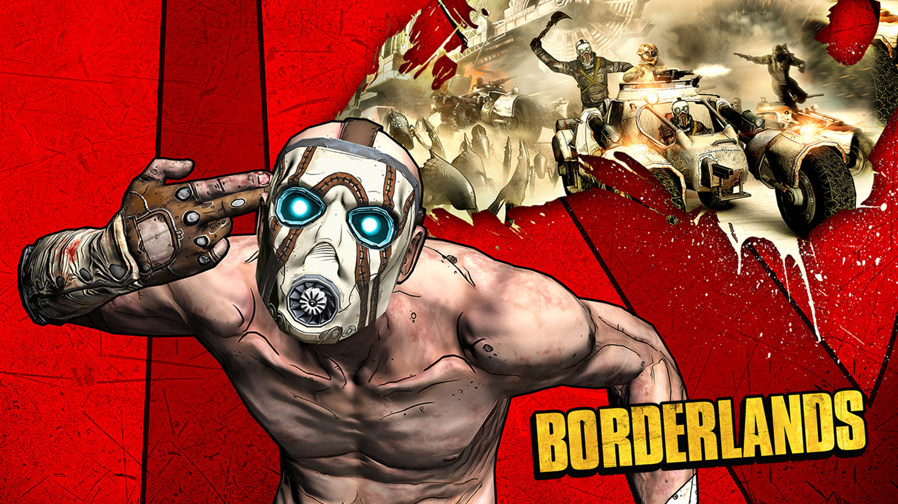

Borderlands

История разработки
Разработка игры была начата Gearbox Software в апреле 2005 года. На тот момент компания руководствовалась идеей о слиянии игровых элементов из Halo: Combat Evolved и серии игр Diablo. Помимо этого, сеттинг игры создавался под впечатлением от серии фильмов Безумный Макс[3]. Через полгода, вместе с увеличением штата сотрудников, была начата активная фаза создания проекта. По прошествию двух лет, игра была впервые продемонстрированна на Games Convention. Первоначально она была выполнена в реалистичной стилистике, впоследствии от которой было решено отказаться из-за сходства с Fallout 3 и Rage, а также из-за её несоответствия геймплею. По инициативе креативного директора компании, Брайана Мартела, с октября 2008 года по начало 2009 года графика игры была переработана с помощью технологии сел-шейдинга. При этом, её прежний дизайн был частично сохранён.Сюжет
В далёком будущем несколько кораблей колонизаторов отправились на Пандору, планету на краю галактики. Колонисты изображены людьми, находящимися в поиске лучшей жизни, а также обширных залежей минеральных ресурсов, которые должны быть на планете и которые может взять каждый — своего рода футуристическая золотая лихорадка. Спустя некоторое время после обоснования на планете колонисты обнаруживают, что там нет практически ничего, кроме нескольких старых инопланетных развалин. Те, у кого были деньги, улетели, а оставшееся население погрузилось в хаос и беззаконие. Некоторые поселенцы стремятся быстро разбогатеть, найдя технологии инопланетян. Большинство других просто пытается выжить. Через семь земных лет на планете, двигающейся по своей медленной орбите, весна начинает сменять зиму, и множество ужасных тварей пробуждается от спячки.
Луч надежды для оставшихся колонистов забрезжил, когда в предгорье было обнаружено таинственное Хранилище (The Vault). Говорили, что в хранилище находится множество технологий и тайн инопланетян. Единственная проблема заключалась в том, что люди, которые обнаружили хранилище, были полностью уничтожены какой-то защищающей силой. Единственным подтверждением их открытия была прервавшаяся радиопередача, в которой говорилось о величии хранилища, но не о его расположении[2].
Игровой процесс
Игра Borderlands является шутером от первого лица, содержащим возможность развития игрового персонажа, инвентарь и прочие элементы, взятые из RPG, тем самым позволяя Gearbox назвать её «role playing shooter». Геймплей и принципы построения квестов — традиционны для современных MMORPG.
На старте игрок выбирает одного из 4 персонажей игры, имеющих свои уникальные навыки и способности.
После выбора персонаж начинает получать задания от неигровых персонажей, выполняя которые, он получает деньги, опыт и предметы. Благодаря росту опыта игроки получают рост уровня персонажа, дающий возможность развивать и открывать новые способности в дереве навыков, которое показывает три различных специализации для данного персонажа. Например, Охотник может стать специалистом в стрельбе из укрытия, использовании револьверов или применении его любимой птицы Кровокрыла (англ. Bloodwing) для помощи в убийствах и сборе предметов. Игроки могут распределить пункты среди любой из специализаций и могут также потратить небольшое количество игровых денег, чтобы перераспределить пункты навыка.
Каждый персонаж начинает игру с двумя слотами под оружие и 12 слотами под предметы в инвентаре (оружие, энергетические щиты, аптечки), но позже сможет получить до четырёх слотов для оружия и до 42 слотов инвентаря. Существуют слоты для энергетического щита, модификатора гранат и классового модуля. Боеприпасы не занимают отдельные слоты, но количество их ограничено, что поправимо модулями SDU (Storage Deck Upgrade), которые можно покупать в торговых автоматах. Поначалу игрок может носить с собой мало предметов, но модули расширения инвентаря позволят носить гораздо больше вещей. Данные модули можно получить, починив попадающихся в определённых местах сломанных роботов Железяк (англ. Claptraps).
Одна из главных особенностей Borderlands — произведённое в огромных количествах оружие и предметы, созданные или найденные у поверженных противников, купленные у продавцов в игре. Игра использует процедурную генерацию для создания оружия и предметов, которые могут изменить их огневую мощь, скорострельность и точность, добавить эффекты, такие возможности как поджог противника или восстановление боеприпасов игрока. Эта система также используется, чтобы создать особенные разновидности врагов, с которыми может столкнуться игрок.
В игру можно играть как одному, так и до двух игроков, играющих кооперативно через разделённый экран на игровых приставках, и до четырёх игроков, играющих кооперативно в игре через сети. Игра следит за продвижением игрока, вознаграждая его и других активных игроков. Игроки могут принять участие в поединках один на один, чтобы выиграть небольшую сумму денег, или могут посетить арены в мире игры, чтобы участвовать в битве 2 на 2.
Borderlands известна благодаря своему особенному графическому стилю, выраженному в смешении графики на движке Unreal Engine 3 и элементов технологии cell-shading, таких как прорисовка контуров.